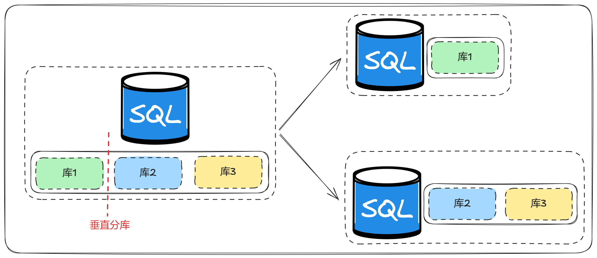
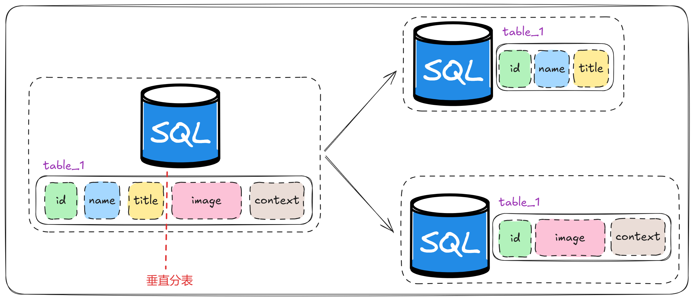
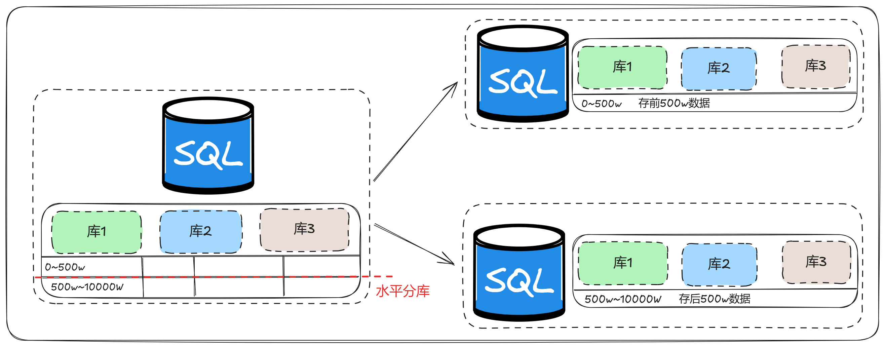
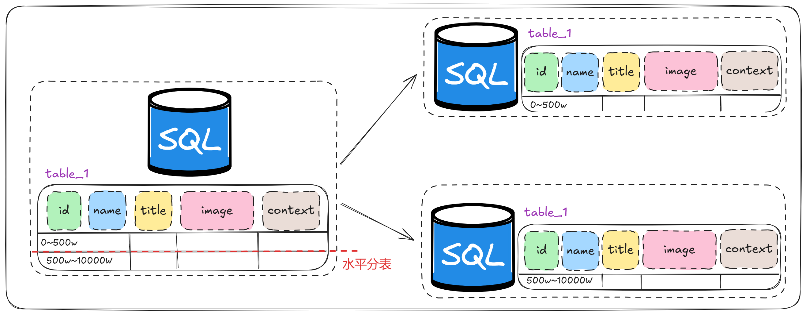

mysql 分库分表

- 随着互联网及移动互联网的发展，应用系统的数据量也是成指数式增长，若采用单数据库进行数据存储，存在以下性能瓶颈：
- IO瓶颈：热点数据太多，数据库缓存不足，产生大量磁盘IO，效率较低。请求数据太多，带宽不够，网络IO瓶颈。
- CPU瓶颈：排序、分组、连接查询、聚合统计等SQL会耗费大量的CPU资源，请求数太多，CPU出现瓶颈。
- 为了解决上述问题，我们需要对数据库进行分库分表处理。分库分表的中心思想都是将数据分散存储，使得单一数据库/表的数据量变小来缓解单一数据库的性能问题，从而达到提升数据库性能的目的。
拆分策略
- 分库分表的形式，主要是两种：垂直拆分和水平拆分。
- 而拆分的粒度，一般又分为分库和分表，所以组成的拆分策略最终如下：
| ————————垂直拆分———————— | ————————水平拆分———————— |
|---|---|
| 垂直分库 | 水平分库 |
| 垂直分表 | 水平分表 |
垂直拆分
垂直分库
- 垂直分库：以表为依据，根据业务将不同表拆分到不同库中。

- 特点：
- 每个库的表结构都不一样。
- 每个库的数据也不一样。
- 所有库的并集是全量数据。
- 比较常用垂直分库，比如产品维度分商品表库和购物车表库。
垂直分表
- 垂直分表：以字段为依据，根据字段属性将不同字段拆分到不同表中。

- 特点：
- 每个表的结构都不一样。
- 每个表的数据也不一样，一般通过一列（主键/外键）关联。
- 所有表的并集是全量数据。
- 当我们的数据表有很多冗余字段时，可采取垂直分表，这样能把热点字段分为一个表，其他字段分为一个表。
水平拆分
水平分库
- 水平分库：以字段为依据，按照一定策略，将一个库的数据拆分到多个库中。

- 特点：
- 每个库的表结构都一样。
- 每个库的数据都不一样。
- 所有库的并集是全量数据。
- 水平分库很少见，不推荐这种。
水平分表
- 水平分表：以字段为依据，按照一定策略，将一个表的数据拆分到多个表中。

- 特点：
- 每个表的表结构都一样。
- 每个表的数据都不一样。
- 所有表的并集是全量数据。
- 水平分表比较常见，比如一张表的数据太大了超千万级别，导致索引检索变慢，可以采用水平分表。
- 一旦涉及水平分布，则需要考虑主键ID(雪花算法)、分多少张表，以及后面扩容问题。
- 常见的几种策略：
- hash取模：假设有用户表user，将其分成3个表user0,user1,user2。路由规则是对3取模,当uid=1时,对应到的是user1,uid=2时,对应的是user2。好处在于说，可以平均分配每个库的数据量和请求压力；坏处在于说扩容起来比较麻烦，会有一个数据迁移的过程，之前的数据需要重新计算 hash 值重新分配到不同的库或表。
- 范围分片：从1-100w一个表,100w-200w一个表。好处在于说，扩容的时候很简单，因为你只要预备好，给每个月都准备一个库就可以了，到了一个新的月份的时候，自然而然就会写新的库了；缺点，但是大部分的请求，都是访问最新的数据。
- 地理位置分片：华南区一个表,华北一个表。根据地区划分表。
- 时间分片：按月分片，按季度分片等等,可以做到冷热数据。
相关中间件
- shardingJDBC：基于AOP原理，在应用程序中对本地执行的SQL进行拦截，解析、改写、路由处理。需要自行编码配置实现，只支持java语言，性能较高。
- MyCat：数据库分库分表中间件，不用调整代码即可实现分库分表，支持多种语言，性能不及前者。
分库分表问题
分布式事务问题
- 如果我们做了垂直分库或者水平分库以后,就必然会涉及到跨库执行SQL的问题,这样就引发了互联网界的老大难问题-“分布式事务”。那要如何解决这个问题呢？
- 使用分布式事务中间件。
- 使用MySQL自带的针对跨库的事务一致性方案(XA),不过性能要比单库的慢10倍左右。
- 能否避免掉跨库操作(比如将用户和商品放在同一个库中)
跨库join的问题
- 分库分表后表之间的关联操作将受到限制，我们无法join位于不同分库的表，也无法join分表粒度不同的表，结果原本一次查询能够完成的业务，可能需要多次查询才能完成。粗略的解决方法：
- 全局表：基础数据，所有库都拷贝一份。
- 字段冗余：这样有些字段就不用join去查询了。
- 系统层组装：分别查询出所有，然后组装起来，较复杂。
横向扩容的问题
- 当我们使用HASH取模做分表的时候,针对数据量的递增,可能需要动态的增加表,此时就需要考虑因为reHash导致数据迁移的问题。
结果集合并、排序的问题
- 因为我们是将数据分散存储到不同的库、表里的,当我们查询指定数据列表时,数据来源于不同的子库或者子表,就必然会引发结果集合并、排序的问题。如果每次查询都需要排序、合并等操作,性能肯定会受非常大的影响。走缓存可能一条路!